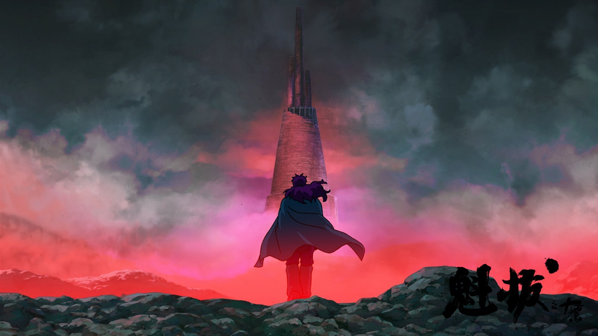
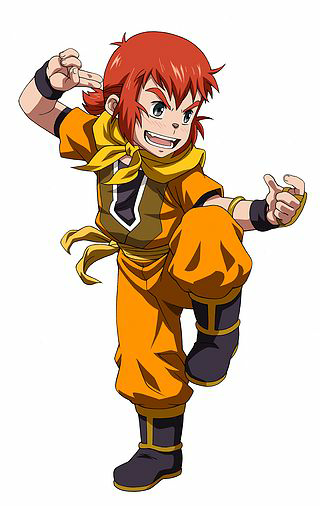
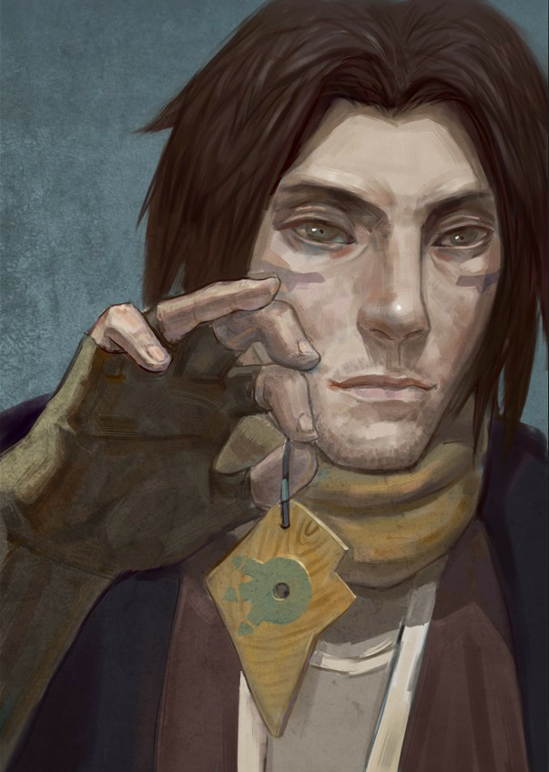

魁拔故事简介
平静安详的元泱境界，每隔333年，总会有一个神秘而恐怖的异常生物重生，它就是魁拔！魁拔的每一次出现，都会给元泱境界带来巨大的灾难！即便是天界的神族，也在劫难逃。在天地两界各种力量的全力打击下，魁拔一次次被消灭，但又总是按333年的周期重新出现。魁拔纪元1664年，天神经过精确测算后，在魁拔苏醒前一刻对其进行毁灭性打击。但谁都没有想到，由于一个差错导致新一代魁拔成功地逃脱了致命一击。很快，天界魁拔司和地界神圣联盟均探测到了魁拔依然生还的迹象。因此，找到魁拔，彻底消灭魁拔，再一次成了各地热血勇士的终极目标。 在偏远的兽国窝窝乡，蛮大人和蛮吉每天为取得象征成功和光荣的妖侠纹耀而刻苦修炼，却把他们生活的村庄搅得鸡犬不宁。村民们绞尽脑汁把他们赶走。一天，消灭魁拔的征兵令突然传到窝窝乡，村长趁机怂恿蛮大人和蛮吉从军参战。然而，在这个一切都凭纹耀说话的世界，仅凭蛮大人现有的一块冒牌纹耀，不要说参军，就连住店的资格都没有。受尽歧视的蛮吉和蛮大人决定，混上那艘即将启程去消灭魁拔的巨型战舰，直接挑战魁拔，用热血换取至高的荣誉。
主要人物介绍
|  | 蛮吉是故事的主人公，真实身份是第六代魁拔，在当时即将诞生之际逃过了天界对其的致命打击，苏醒后失去了天界对其打击前的所有记忆。后被蛮小满收养，一直以来都把蛮小满当成兄弟兼父亲，并跟随蛮小满学习脉术。一直渴望能够得到蛮大人的认可。在蛮大人的熏染下，造就了蛮吉没心没肺又热血的性格。蛮吉是个敏感懂事的孩子，他知道蛮大人的脉术功夫平平，战斗力低，更知道蛮大人的纹耀不是显赫的纹耀，不过是自制的木头片。即便这样，蛮大人在蛮吉心中却依然有着不可替代的地位。蛮吉有着和蛮大人同样的梦想，打败魁拔，建功立业，光大纹耀。 蛮小满 |
|  | 蛮大人和蛮吉一样，也是孤儿，在《魁拔》的世界里，孤儿是不会被授予纹耀的，也不会得到社会的认同和相应的地位。但是，蛮小满非但不因此自卑，反而更加斗志昂扬，乐观向上。他用木头自制了纹耀，还创立了一套关于自己纹耀的说法。遗憾的是，这些说法和自大只能说给蛮吉听，也只有蛮吉买账。蛮大人苦练脉术，希望有一天能够建功立业，从而光大自己的纹耀。 |
| 镜心是一名天神。在魁拔复活，威胁宇宙之际，镜心从魁拔司考试中脱颖而出，成了掌握天神绝密武器的魁拔司成员。她独自携带能够摧毁魁拔的武器来到地界，准备消除这个恶魔....... | |
| 粼妖▪海问香，粼妖族第一英雄，2014年上映的《魁拔之战神崛起》中为主要人物，其任务是不让曲境一号走出曲境，并且毁灭曲境一号。在《魁拔之战神崛起》中为了毁灭曲境一号，召唤出脉兽，然而在与蛮吉交战时因蛮吉催动体内的魁拔本质召唤出新的脉兽而落败，后被远浪的脉冲炮击穿脉兽的胸膛，随脉兽一起消失。 |